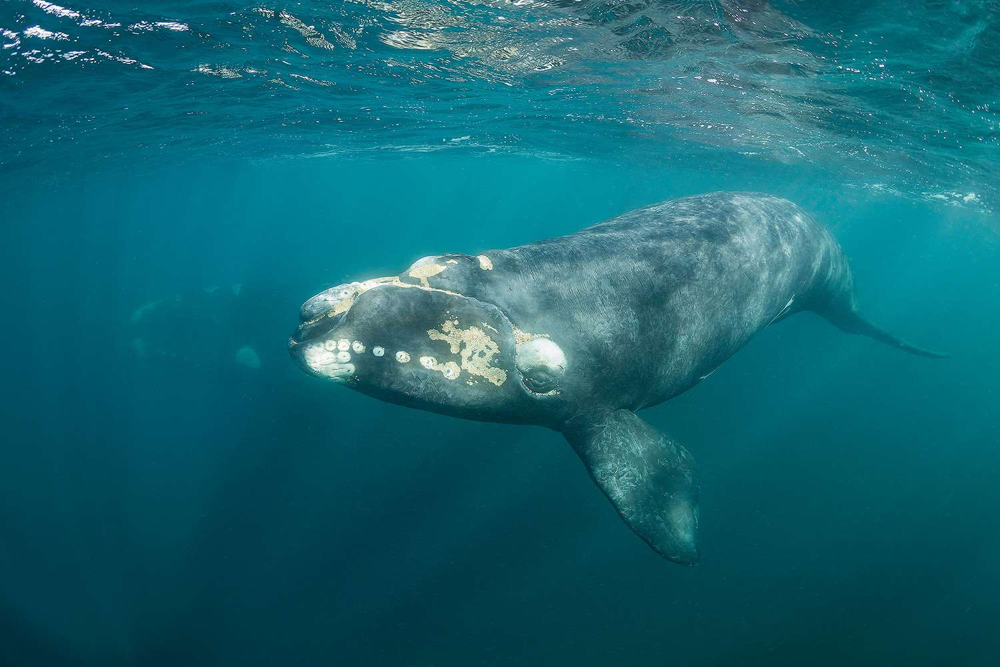

Dolphins
Dolphins are common in the coastal waters of North Carolina. They are known for their intelligence and playful behavior.
Whales
Several species of whales can be found off the coast of North Carolina, including the Humpback Whale and the North Atlantic Right Whale.
Seals
Seals occasionally visit the beaches of North Carolina. They are usually seen during the colder months.